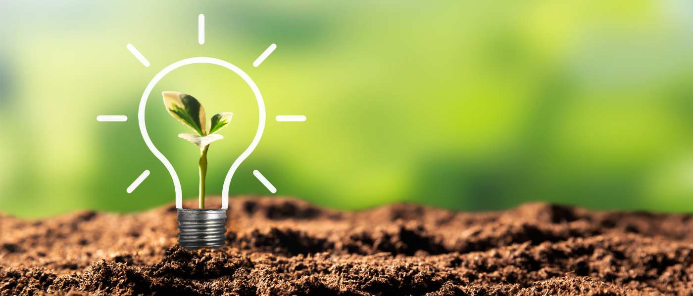
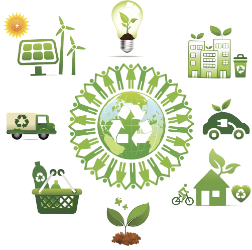

Sustentabilidade
Sustentabilidade é um conceito que busca promover a
utilização dos recursos
naturais de forma equilibrada e
responsável, visando garantir o atendimento das necessidades
presentes sem
comprometer a capacidade das
geraçõe
futuras de atenderem às suas próprias necessidades.

SUSTENTABILIDADE ECONÔMICA:
Não há uma definição totalmente precisa sobre sustentabilidade econômica apenas
aproximações e normas que devem
ser seguidas de acordo com o Plano de Gerenciamento de Resíduos Sólidos (PGRS), como
por exemplo:
☀ o aumento da diversidade na matriz energética, etc.
☀ as políticas de geração de emprego;
☀ as medidas anti corrupção e em prol da transparência;
☀ o incentivo a modelos alternativos, como a Economia Solidária, Economia Compartilhada e
a Economia
Circular;
☀ o aumento da diversidade na matriz energética, etc.
SUSTENTABILIDADE SOCIAL:
A sustentabilidade social é um conjunto de ações que tem como propósito melhorar a qualidade de
vida de
todos
incluindo menorias,
e diminuindo a desigualdade social.
SUSTENTABILIDADE SOCIAL:
A sustentabilidade social é um conjunto de ações que tem como propósito melhorar a qualidade de
vida de
todos
incluindo menorias,
e diminuindo a desigualdade social.
SUSTENTABILIDADE AMBIENTAL OU ECOLÓGICA:
A sustentabilidade ecológica se trata da preservação do meio ambiente para que gerações futuras
não
sofram
pelo uso
excessivo dos nossos recursos naturais.

.png)